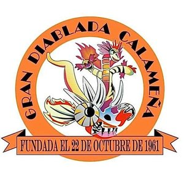
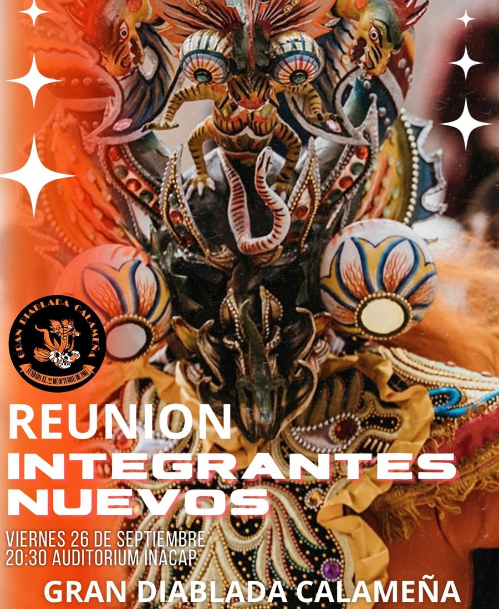

Desde 1961 · Santuario de Ayquina
Gran Diablada Calameña Más de 60 años bailando por la Virgen de Guadalupe de Ayquina
Con orgullo, fe, devoción y elegancia.
La Gran Diablada Calameña danza la representación de la eterna lucha entre el Bien y el Mal en las festividades religiosas del poblado de Ayquina en el norte de Chile.
Historia
Origen y fe
La Gran Diablada Calameña fue fundada en Calama el 22 de octubre de 1961 por un grupo de personas devotas de la Virgen Guadalupe de Ayquina, bajo el impulso de su fundador, Juan Benavides. Es institución fundadora de la Asociación de Bailes Religiosos del Santuario de Ayquina de Calama, y participa activamente en las festividades religiosas en su honor.
«La danza recrea la eterna lucha entre el Bien y el Mal — una expresión espectacular de colorido y brillo con los trajes y accesorios.»
Somos una comunidad cristiana que expresa su fe católica mediante la danza, la música y los cantos, para mantener viva esta religiosidad popular tan arraigada en el norte de Chile. Cada 8 de septiembre bailamos en el Santuario de Ayquina junto a los demás bailes religiosos, con alegría y gratitud a la Virgen María, Madre de Jesús.
Comparsas
Catorce comparsas, una sola coreografía
Luciferes, chinas supay, diablesas, diablos y otras figuras dan vida a la legión del mal, mientras quienes representan la virtud sostienen el otro extremo de la danza. Así se organizan las comparsas:
- Arcángeles
- Bloque Infantil
- Figurines (Cóndor, Perros del Infierno, Condenados, Chinas de Antaño)
- Ñawpas
- China Supay
- Osos
- Chinas Doble Cara
- Waris & Luciferes
- Virtudes
- Tentaciones & Pecados
- Diablesas
- Diablos
- Jukumaris
- K'acha Viuda & Yana conciencia

Música
Nuestras canciones
Diabladas y cuecas propias de la agrupación, compuestas para acompañar nuestra devoción a la Virgen de Guadalupe de Ayquina. Escúchalas aquí o descárgalas.
-
↓ MP3
La Gran Calameña
-
↓ MP3
Entran los Diablos
-
↓ MP3
Diablo Desconocido
-
↓ MP3
A rajar la bota Diablo
-
↓ MP3
Naranja y Negro 50 años
-
↓ MP3
60 años
-
↓ MP3
60 años de fe
-
↓ MP3
Recuerdos GDC
-
↓ MP3
Desde Ayquina
-
↓ MP3
Adiós Chinita
© Gran Diablada Calameña — Todos los derechos reservados
Estas canciones son obras originales de la Gran Diablada Calameña y están protegidas por la Ley N° 17.336 de Propiedad Intelectual. Puedes escucharlas y descargarlas para uso personal y devocional. Queda prohibida su reproducción pública, modificación, venta, distribución o inscripción a nombre de terceros sin autorización escrita de la agrupación. Cada archivo lleva incrustados los datos de autoría y derechos.
Para solicitar autorización de uso, escríbenos a gdcayquina@gmail.com.
Directiva
Quiénes la conducen
Presidente
Sergio Velásquez D.
Vicepresidente
Marco Flores M.
1er Director
Mario Pérez
2do Director
Jorge Montalbán
3er Director
Cristian Donoso
Tesorero
Pedro Donoso O.
Pro-Tesorero
Héctor Matus B.
Caporal
Cristian Pizarro
Caporal
José Carvajal
Transparencia
Documentos para socios
Certificado notarial de la autorización de uso de cuenta bancaria con fines institucionales, emitido por la Primera Notaría de El Loa-Calama el 29 de septiembre de 2026; los socios pueden solicitar el documento completo a la Directiva.
Ver certificado notarialActividades
Nuestro calendario
Próximos ensayos, presentaciones y asambleas de la Gran Diablada Calameña.
Cargando actividades…
Contacto
Súmate a la promesa
¿Quieres bailar, hacerte socio o simplemente saber más sobre la Diablada? Envía tu solicitud o escríbenos por cualquiera de estos canales.